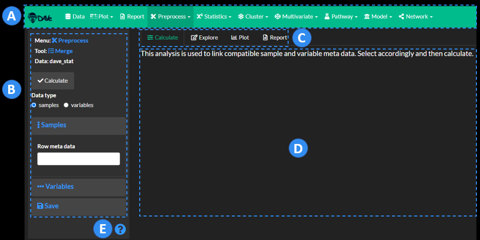
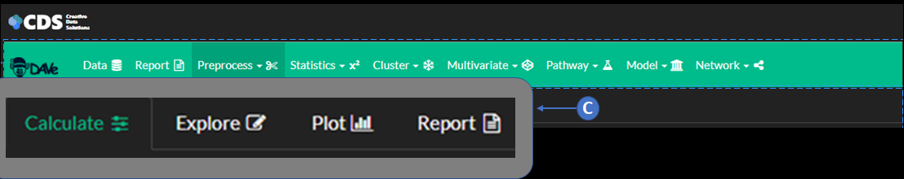

Overview
%%{init: {'theme': 'dark'}}%%
graph LR
1((Global Utilities)) --> data["fa:fa-database Data #9679;"];
2((Modules)) -->1
1 --> report["fa:fa-file-text-o Report #9679;"];
1 --> vis["fa:fa-braille Plot #9679;"];
2 --> preproc["fa:fa-scissors Preprocess #9679;"];
2 --> stats["fa:fa-superscript Statistics #9679;"];
2 --> path["fa:fa-flask Pathway #9679;"];
2 --> clust["fa:fa-snowflake-o Cluster #9679;"];
2 --> multi["fa:fa-codepen Multivariate #9679;"];
2 --> ml["fa:fa-university Model #9679;"];
2 --> net["fa:fa-share-alt Network #9679;"];
classDef green fill:#33a378, color:#fff, stroke:#33a378;
classDef blue fill:#4472c4, color:#fff, stroke:#4472c4;
class 1 blue;
class 2 blue;
class 3 blue;
class 4 blue;
class 5 blue;
class 6 blue;
class 7 blue;
class 8 blue;
class 9 blue;
class data green;
class preproc green;
class stats green;
class clust green;
class multi green;
class ml green;
class path green;
class report green;
class net green;
class vis green
DAVe is comprised of individual which can be linked to create a variety of unique data analysis workflows. Global Utilities include Data, Plot and Report which are used to manage data, interactively create plots and reports from assets generated with the data analysis.

A Select
B Controls
C Workflows
